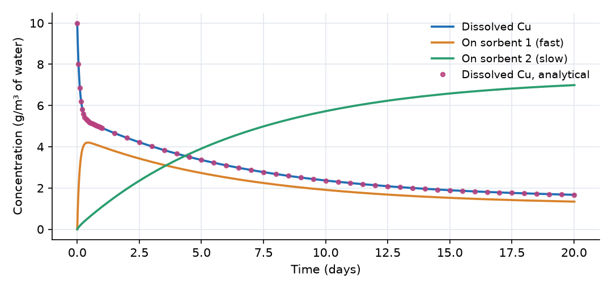
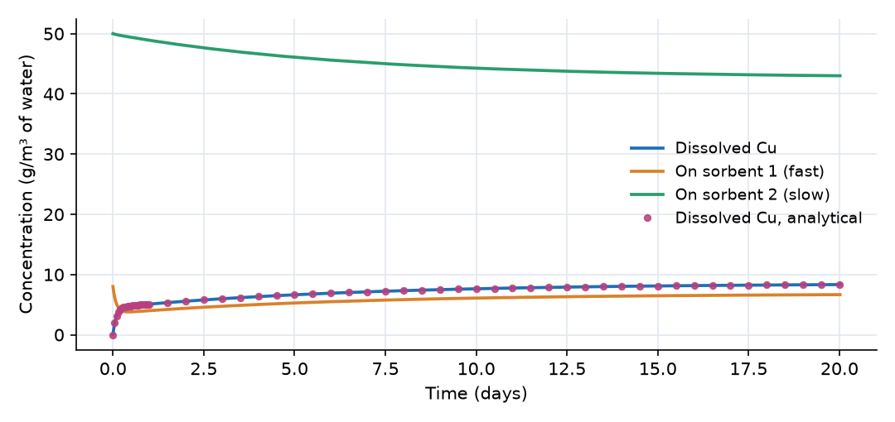

What this model represents
A laboratory batch test: a known mass of solid is shaken with water containing a dissolved contaminant, and the dissolved concentration is followed over time. Here the suspension contains two different sorbents, and two tests run side by side:
- Sorption_test starts with 10 g/m³ (10 mg/L) of dissolved copper and clean solids.
- Desorption_test starts with clean water and solids that were previously equilibrated with 10 g/m³ of dissolved copper.
The two sorbents differ in both capacity and speed. Sorbent 1 (for example an iron-oxide-coated sand, 40 g/L in the suspension) has a low distribution coefficient and fast kinetics. Sorbent 2 (for example biochar or peat, 10 g/L) has a high distribution coefficient and slow kinetics. Mixtures like this are common in amended soils, filter media and sediments. They produce the two-stage uptake curves often seen in batch data: a rapid initial drop followed by a slow tail, a shape that a single-sorbent equilibrium model cannot reproduce. The model can be used to interpret such data or to design an amendment.
How it works
Each Reactor is a closed, well-mixed volume of water, V = 1 m³. All three constituents are of the ordinary Constituent type, so each concentration is mass per volume of water: OpenHydroQual computes concentration = mass/(Storage + 0.00001). For the sorbed constituents this is the sorbed mass divided by the water volume. The loading per mass of solid follows from the solid concentration mᵢ (kg/m³):
qᵢ = Cu_s_i / mᵢ (g of Cu per kg of solid)
The two reactions are reversible first-order mass transfer toward a linear isotherm (the "linear driving force" model):
r₁ = k_1 · (Cu_aq − Cu_s_1 / (m_1·K_d_1)) r₂ = k_2 · (Cu_aq − Cu_s_2 / (m_2·K_d_2))
OpenHydroQual multiplies each reaction rate by the block's Storage (the water volume) and by each stoichiometric coefficient, and adds the result to that constituent's mass balance. With coefficients −1 for Cu_aq and +1 for the sorbed phase, the mass removed from the water equals the mass gained by the solid, so total copper is conserved exactly:
dCu_aq/dt = −r₁ − r₂ dCu_s_1/dt = r₁ dCu_s_2/dt = r₂
At equilibrium each rate is zero, so Cu_s_i = mᵢ·K_d,i·Cu_aq, which is the same as qᵢ = K_d,i·Cu_aq: the linear (K_d) isotherm. With the values in the model, m_1·K_d_1 = 40 × 0.02 = 0.8 and m_2·K_d_2 = 10 × 0.5 = 5 (dimensionless). At equilibrium the total copper therefore divides as 1 : 0.8 : 5 between water, sorbent 1 and sorbent 2.
Analytical check. The system is linear with constant coefficients, so it has an exact solution as a sum of exponentials. The eigenvalues of the rate matrix are 0, −11.3 per day and −0.150 per day. The zero eigenvalue reflects mass conservation. The second sets the time scale of sorbent 1 (about 2 hours) and the third the time scale of sorbent 2 (about 7 days). The points in the plots are this exact solution for dissolved copper.
Time stepping. The run lasts 20 days. The initial time step is 0.001 day and max_timestep_increase_factor = 10 caps the step at 0.01 day, so the two-hour fast phase is resolved.
What to look for in the results
- Two time scales in the sorption test. Dissolved copper drops from 10 to about 5.2 g/m³ within half a day, close to the value it would reach with sorbent 1 alone (10/1.8 = 5.6 g/m³). It then declines slowly toward the final equilibrium of 10/6.8 = 1.47 g/m³. By day 20 it is 1.67 g/m³, still above equilibrium.
- Overshoot on the fast sorbent. Copper on sorbent 1 peaks at 4.2 g/m³ (q₁ ≈ 105 mg/kg) after about 10 hours, then falls to 1.34 g/m³ by day 20. Sorbent 1 stays close to equilibrium with the water, and the water concentration keeps falling because of sorbent 2, so sorbent 1 gives copper back. The capacity of the slow sorbent decides the final distribution; the fast sorbent decides the early response.
- Limited release in the desorption test. The total copper is 8 + 50 = 58 g/m³. At equilibrium the water holds only 58/6.8 = 8.5 g/m³, so about 15% of the sorbed copper is released. A desorption test that runs only a few hours sees sorbent 1 release copper (dissolved Cu rises to about 4.8 g/m³ in half a day) and says little about the long-term release from sorbent 2.
- Mirror image. In the desorption test sorbent 1 first loses copper (down to 3.8 g/m³ at about 10 hours) and then regains it (6.7 g/m³ by day 20) as sorbent 2 slowly releases copper into the water.
- Agreement with the exact solution. Model and analytical points agree to within about 1% at 2.4 hours and to within 0.1% after the first day. The small early difference comes from the implicit (backward Euler) time stepping during the fastest phase.
- Mass conservation. In each reactor the sum Cu_aq + Cu_s_1 + Cu_s_2 stays constant (10 g/m³ in the sorption test, 58 g/m³ in the desorption test), apart from a 0.001% offset caused by the 0.00001 m³ added to Storage in the concentration formula.
Assumptions and limitations
- Both isotherms are linear. At higher loadings real sorbents saturate, which a Langmuir or Freundlich term in the rate expression would capture.
- Sorption and desorption follow the same isotherm and rate constant, so there is no hysteresis or irreversibly bound fraction.
- The suspension is perfectly mixed and the solid concentrations m_1 and m_2 are constant. The water volume does not change, and sampling does not remove water.
- Copper speciation, pH and competition with other ions are not modeled; their combined effect is folded into K_d.
- The sorbed concentrations are expressed per volume of water, which suits a batch suspension. For a packed porous medium described by bulk density and porosity, see the soil column breakthrough example.
Model diagram
Hover a block or link to see its name and type. Arrows show the positive flow direction.
Components
Click a component to see every property set in the model file, with units and meaning.
Blocks 2
Storage compartments: each holds water (and dissolved or particulate mass) and has a state that evolves in time.
Sorption_testReactor · mass_transferA 1 m³ batch reactor of water containing both sorbents. Starts with 10 g/m³ of dissolved copper and clean solids. No inflow or outflow.
Reactor: Reactor
| Property | Value | Unit | Meaning |
|---|---|---|---|
| Cu_aq: Concentration | 10 | g/m3 | Computed as mass/(Storage+0.00001) |
| Cu_s_1: Concentration | 0 | g/m3 | Computed as mass/(Storage+0.00001) |
| Cu_s_2: Concentration | 0 | g/m3 | Computed as mass/(Storage+0.00001) |
| Initial Storage | 1 | m3 | |
| Bottom elevation | 0 | m | |
| Constant Inflow | 0 | m3/day |
Desorption_testReactor · mass_transferAn identical reactor that starts with clean water and solids pre-loaded to equilibrium with 10 g/m³ of dissolved copper (8 g/m³ on sorbent 1, 50 g/m³ on sorbent 2).
Reactor: Reactor
| Property | Value | Unit | Meaning |
|---|---|---|---|
| Cu_aq: Concentration | 0 | g/m3 | Computed as mass/(Storage+0.00001) |
| Cu_s_1: Concentration | 8 | g/m3 | Computed as mass/(Storage+0.00001) |
| Cu_s_2: Concentration | 50 | g/m3 | Computed as mass/(Storage+0.00001) |
| Initial Storage | 1 | m3 | |
| Bottom elevation | 0 | m | |
| Constant Inflow | 0 | m3/day |
Constituents 3
Substances or particles carried by the water.
Cu_aqConstituentDissolved copper (g/m³ of water).
Constituent: Chemical constituent
| Property | Value | Unit | Meaning |
|---|---|---|---|
| Concentration | 0 | g/m3 | Computed as mass/(Storage+0.00001) |
| Constant Inflow concentration | 0 | g/m3 | |
| Diffusion Coefficient | 0 | m2/day | |
| Dispersivity | 0 | m | |
| Stoichiometric Constant | 0 |
Cu_s_1ConstituentCopper sorbed on sorbent 1, expressed as mass per volume of water in the reactor (g/m³). The loading per mass of solid is q₁ = Cu_s_1/m_1 (g/kg).
Constituent: Chemical constituent
| Property | Value | Unit | Meaning |
|---|---|---|---|
| Concentration | 0 | g/m3 | Computed as mass/(Storage+0.00001) |
| Constant Inflow concentration | 0 | g/m3 | |
| Diffusion Coefficient | 0 | m2/day | |
| Dispersivity | 0 | m | |
| Stoichiometric Constant | 0 |
Cu_s_2ConstituentCopper sorbed on sorbent 2, in g/m³ of water. The loading per mass of solid is q₂ = Cu_s_2/m_2 (g/kg).
Constituent: Chemical constituent
| Property | Value | Unit | Meaning |
|---|---|---|---|
| Concentration | 0 | g/m3 | Computed as mass/(Storage+0.00001) |
| Constant Inflow concentration | 0 | g/m3 | |
| Diffusion Coefficient | 0 | m2/day | |
| Dispersivity | 0 | m | |
| Stoichiometric Constant | 0 |
Reaction parameters 6
Named coefficients used in reaction rate expressions.
k_1ReactionParameterMass-transfer rate coefficient of sorbent 1 (1/day). Large: sorbent 1 equilibrates within hours.
ReactionParameter: Reaction Parameter
| Property | Value | Unit | Meaning |
|---|---|---|---|
| Arrhenius temperature correction factor | 1 | ||
| Value | 5 | ||
| Reference Temperature | 20 |
K_d_1ReactionParameterLinear distribution coefficient of sorbent 1 (m³/kg, equal to L/g). 0.02 m³/kg is 20 L/kg: a modest affinity typical of a mineral surface.
ReactionParameter: Reaction Parameter
| Property | Value | Unit | Meaning |
|---|---|---|---|
| Arrhenius temperature correction factor | 1 | ||
| Value | 0.02 | ||
| Reference Temperature | 20 |
m_1ReactionParameterConcentration of sorbent 1 in the suspension (kg of solid per m³ of water, equal to g/L).
ReactionParameter: Reaction Parameter
| Property | Value | Unit | Meaning |
|---|---|---|---|
| Arrhenius temperature correction factor | 1 | ||
| Value | 40 | ||
| Reference Temperature | 20 |
k_2ReactionParameterMass-transfer rate coefficient of sorbent 2 (1/day). Small: sorbent 2 needs weeks to equilibrate, as for intraparticle diffusion into a porous organic solid.
ReactionParameter: Reaction Parameter
| Property | Value | Unit | Meaning |
|---|---|---|---|
| Arrhenius temperature correction factor | 1 | ||
| Value | 0.2 | ||
| Reference Temperature | 20 |
K_d_2ReactionParameterLinear distribution coefficient of sorbent 2 (m³/kg). 0.5 m³/kg is 500 L/kg, a high-affinity material such as biochar or organic matter.
ReactionParameter: Reaction Parameter
| Property | Value | Unit | Meaning |
|---|---|---|---|
| Arrhenius temperature correction factor | 1 | ||
| Value | 0.5 | ||
| Reference Temperature | 20 |
m_2ReactionParameterConcentration of sorbent 2 in the suspension (kg/m³).
ReactionParameter: Reaction Parameter
| Property | Value | Unit | Meaning |
|---|---|---|---|
| Arrhenius temperature correction factor | 1 | ||
| Value | 10 | ||
| Reference Temperature | 20 |
Reactions 2
Transformations among constituents, each with a stoichiometry and a rate expression.
Sorption_1ReactionNet transfer of copper from water to sorbent 1, rate k_1·(Cu_aq − Cu_s_1/(m_1·K_d_1)). Negative values mean desorption.
Reaction: Chemical reaction
(k_1*(Cu_aq-Cu_s_1/(m_1*K_d_1)))| Constituent | Stoichiometric coefficient |
|---|---|
| Cu_aq | -1 |
| Cu_s_1 | 1 |
Sorption_2ReactionNet transfer of copper from water to sorbent 2, rate k_2·(Cu_aq − Cu_s_2/(m_2·K_d_2)).
Reaction: Chemical reaction
(k_2*(Cu_aq-Cu_s_2/(m_2*K_d_2)))| Constituent | Stoichiometric coefficient |
|---|---|
| Cu_aq | -1 |
| Cu_s_2 | 1 |
Input files
analytical_sorption.csv | Exact solution of the sorption test for dissolved copper (time in days, Cu_aq in g/m³), computed from the eigenvalues of the linear system described below. Used only for the comparison plot; the model does not read it. |
analytical_desorption.csv | Exact solution of the desorption test for dissolved copper (days, g/m³). Used only for the comparison plot. |
Simulation settings
| Start time | 0 |
| End time | 20 |
| Initial time step | 0.001 |
| Write interval (steps) | 5 |
Results
Produced by running the downloaded model unchanged.

